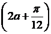
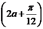

周五数学小测试
1、已知sin(α－β)cosα－cos(α－β)sinα＝5，且β是第三象限角，则cos2的值等于( ) A．±5 B．±5 C．－5 D．－5
2、(1＋tan21°)(1＋tan22°)(1＋tan23°)(1＋tan24°)的值是( )
A．16 B．8
C．4 D．2
3、函数f(x)＝sin4x＋cos2x的最小正周期是( )
A．4 B．2 C．π D．2π
4、函数f(x)＝sinx－cos6的值域为( )
A．[－2,2] B．[－，] C．[－1,1] D.3
5、已知f(tanx)＝sin2x，则f(－1)的值是( )
A．1 B．－1
C．2 D．0
6、若函数f(x)＝sin(x＋3)＋asin(x－6)的一条对称轴方程为x＝2，则a等于( )
A．1 B． C．2 D．3
7、已知sin2α＝5＜2α＜π，tan(α－β)＝2，则tan(α＋β)的值为( )
A．－2 B．－1 C．－11 D.11
8、已知tan ＝－
＝－ ，且<α<π，则
，且<α<π，则 ＝( )
＝( )
A． B．－
B．－ C．－
C．－ D．－
D．－
9、(2012江苏高考)设α为锐角，若cos ＝
＝ ，则sin的值为__________．
，则sin的值为__________．
10、已知sinα＝13，sin(α＋β)＝5，α、β均为锐角，求cos2的值．
11、已知函数f(x)＝4cosωx·sin4(ω>0)的最小正周期为π.
(1)求ω的值；
(2)讨论f(x)在区间[0,2]上的单调性．
12、已知函数f(x)＝cos(2x－3)＋2sin(x－4)sin(x＋4)．
(1)求函数f(x)的最小正周期和对称轴方程；
(2)求函数f(x)在区间[－12，2]上的值域．